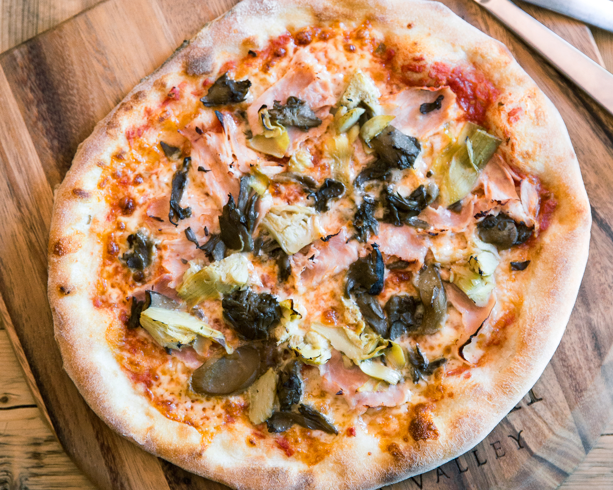

Pizza Capricciosa Recipe
Home
Description
Pizza Capricciosa is a pizza with a base of tomato and mozzarella, enriched with artichokes and marinated mushrooms, black olives, cooked ham, and basil. Seemingly similar to the Four Seasons Pizza, the Capricious was originally created with the intent of using up leftover ingredients from the pantry, and its success over time demonstrates how a simple fridge-clearing recipe can become a great classic of Italian tradition. Roll up your sleeves to prepare a homemade Capricious Pizza made to perfection and get ready to enjoy a true explosion of flavors! Here is what you'll need to make it:
Ingredients
- 4 cups all-purpose flour
- 1 teaspoon salt
- 2 cups water
- ½ tsp fresh brewer's yeast
- 2 tbsp extra virgin olive oil
- 1.67 cups peeled tomatoes
- 7 oz prosciutto cotto
- 3 oz artichokes in oil
- 8 cups mozzarella cheese
- 3.5 oz mushrooms
- 1.4 oz black olives
- Extra virgin olive oil to taste
Directions
- To prepare the Capricious Pizza, start with the starter dough: in a pitcher, pour the water and crumbled fresh yeast, then stir to dissolve completely. Put the flour in a bowl and add the water and yeast mixture.
- Mix everything first with a spoon and then with your hands; you don't need to knead too much, just ensure all the flour is incorporated. Break the dough into irregular pieces, place them back in the bowl, and cover with plastic wrap. Let it mature in the refrigerator for 24 hours.
- After the maturation time, transfer the starter dough to the bowl of a stand mixer equipped with a dough hook. Add the crumbled yeast and the flour.
- Also pour in half of the water and start the stand mixer. Add the remaining water slowly while the mixer runs until fully absorbed. At this point, add the salt and the oil slowly, keeping the mixer running.
- When the dough is smooth and homogeneous, move to the work surface, cover it with the bowl, and let it rest for 10 minutes. After this time, give it 2 folds.
- Let the dough rest again, covered with the bowl, for 10 minutes. Repeat this operation 2 more times, then transfer the dough to the bowl, cover with plastic wrap and let it rise at room temperature for about an hour, or until doubled in size. Meanwhile, place the baking stone on the top rack of the oven preheated to 482°F in static mode.
- Once doubled in volume, flip the dough onto the work surface and cut it with a dough scraper to get 6 portions of about 10 oz each.
- Make small folds to form balls and place them on an oiled tray.
- Oil the surface of the balls as well, cover with plastic wrap, and let them rise at room temperature for 30 minutes. Meanwhile, pour the canned tomatoes into a bowl and crush them with your hands.
- Season with oil and salt, add fragrance with basil leaves, and mix.
- After the rising time, stretch the dough balls on the semolina-dusted surface by pressing with your fingertips from the center and gently pulling the dough until you get a diameter of about 12-13 inches. Spread the tomato sauce on the surface and sprinkle with mozzarella.
- Add the artichokes, olives, and cooked ham.
- Finish with marinated mushrooms, then transfer the pizza onto the peel and slide it onto the baking stone. Bake for 6 minutes, then remove and garnish with basil. Your Capricious Pizza is ready to be enjoyed!